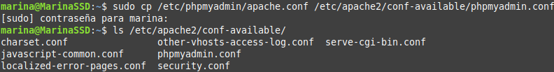
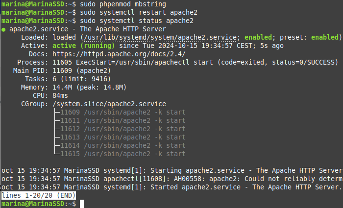

Instalar, configurar y securizar phpMyAdmin
Prerrequisitos
Antes de instalar PHP, deberías instalar: * Apache (hecho en la práctica anterior) * MySQL * sudo apt update * sudo apt install mysql-server

Instalación de phpMyAdmin
- Instala phpMyAdmin junto con las extensiones PHP necesarias.
- sudo apt install php-mbstring php-zip php-gd php-json php-curl
php-mbstring, php-zip, php-gd, php-json, php-curl

- sudo apt install php libapache2-mod-php

Para comprobar que hemos instalado bien php crearemos un archivo con la siguiente información y lo buscaremos a través del navegador. * sudo nano /var/www/info.php
<?php
phpinfo();
?>
- http://IP/nombre_archivo
- En mi caso será http://10.10.10.196/info.php

- Configurar phpMyAdmin para que funcione con Apache.
- sudo apt install phpmyadmin
Para configurarlo correctamente elejiremnos las siguientes opciones:
- apache2 --> para el servidor
- sí --> cuando nos pregunte si queremos usar dbconfig-common para configurar la base de datos
- Asignaremos una contraseña, en mi caso le he puesto:
- phpmyadmin
En mi caso la instalación ya estaba hecha, no he podido poner capturas.
- phpmyadmin
- Vamos a habilitar el archivo de configuración de phpmyadmin
- cd /etc/phpmyadmin/apache.conf
- sudo cp apache.conf /etc/conf-available/phpmyadmin.conf
- sudo a2enconf phpmyadmin.conf

. Habilita la extensión mbstring y reinicia Apache * sudo phpenmod mbstring * sudo systemctl restart apache

Configuración del Acceso por Contraseña para la Cuenta Root de MySQL
- Cambia el método de autenticación del usuario root de MySQL (de auth_socket a caching_sha2_password o mysql_native_password)
- sudo mysql
- select user,host,authentication_string,plugin from mysql.user;
 * alter user 'root'@'localhost' identified with 'mysql_native_password' by 'root';
* alter user 'root'@'localhost' identified with 'mysql_native_password' by 'root';

- Verificar los métodos de autenticación empleados por cada uno de tus usuarios.
- Entraremos introduciendo la contraseña que le hemos asignado en el paso anterior con el comando:
- sudo mysql -u root -p

Configuración del Acceso por Contraseña para un Usuario Dedicado de MySQL
- Crear un nuevo usuario de MySQL con una contraseña segura.
- create user 'marina'@'localhost' identified with 'mysql_native_password' by 'phpmyadmin';

- Otorgar al nuevo usuario los privilegios apropiados para gestionar las bases de datos a través de phpMyAdmin
- grant all privileges on . to 'marina'@'localhost' with grant option;

- Comprobamos que podemos acceder a la interfaz web
- https://your_domain_or_IP/phpmyadmin
- En mi caso será https://your_domain_or_IP/phpmyadmin
Asegurando tu Instancia de phpMyAdmin
- Habilitar el uso de sobrescrituras de archivos .htaccess en la configuración de Apache para phpMyAdmin.
- Editamos el archivo phpmyadmin.con y le añadimos la línea AllowOverride All
- sudo nano /etc/apache2/conf-available/phpmyadmin.conf
- Tendria que quedar de la siguiente forma:
<Directory /usr/share/phpmyadmin>
Options SymLinksIfOwnerMatch
DirectoryIndex index.php
AllowOverride All
... # Otras directivas
</Directory>

- Crear un archivo .htaccess en el directorio de phpMyAdmin para implementar autenticación básica.
- Creamos el archivo y lo editamos
- cd /usr/share/phpmyadmin
- sudo nano .htaccess
- Tendria que quedar de la siguiente forma:
AuthType Basic
AuthName "Acceso Restringido"
AuthUserFile /etc/phpmyadmin/.htpasswd
Require valid-user

- Crear un archivo .htpasswd para almacenar las credenciales de usuario y contraseña.
- sudo htpasswd -c /etc/phpmyadmin/.htpasswd phpmyadmin
- phpmyadmin_htaccess
- Reiniciar Apache para aplicar los cambios.
- sudo systemctl restart apache2
- sudo systemctl status apache2
Comprovar que funciona
- http://IP/nombre_archivo
- En mi caso será http://192.168.0.144/phpmyadmin